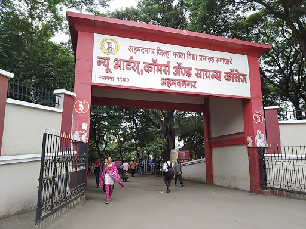
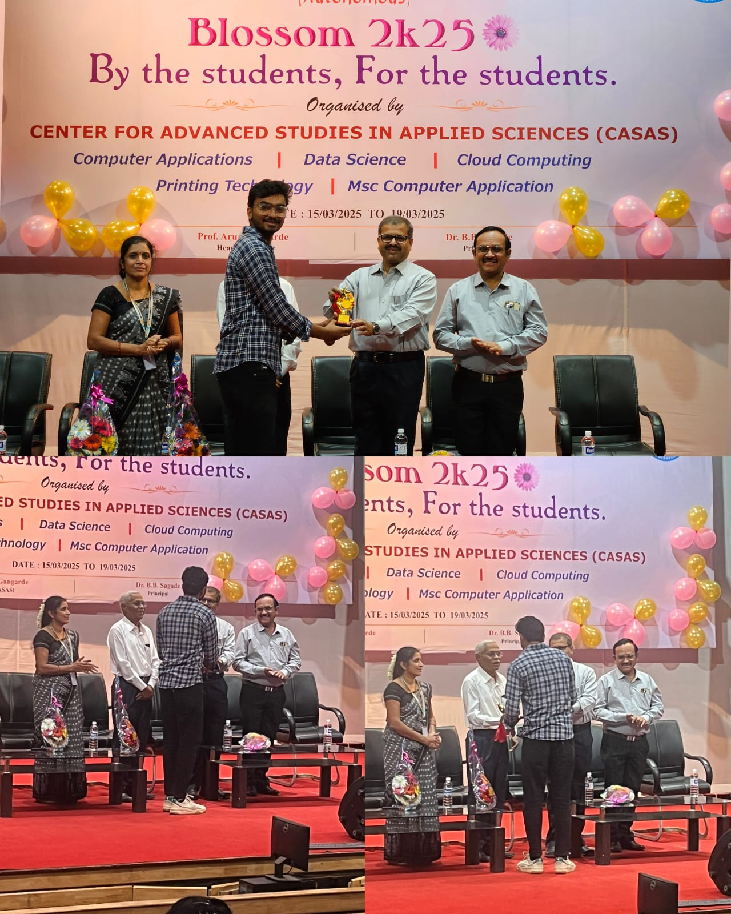
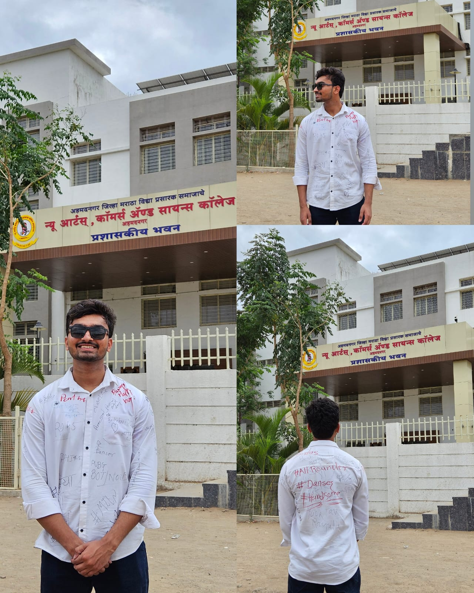
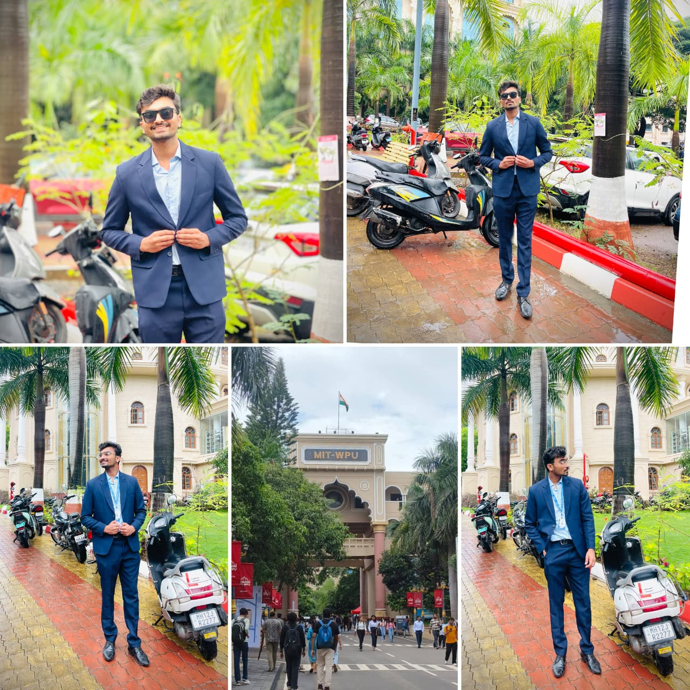

Timeline
My academic and professional journey.
Jun 2022
BCA Started
Started my Bachelor of Computer Applications (Science) at New Arts, Commerce and Science College, Ahmednagar, Maharashtra.

2023 – 2025
College Achievements
Received Best Sport Person and Best Volunteer awards for sports and college event contributions.

Jun 2025
BCA Completed
Successfully completed Bachelor of Computer Applications with a strong foundation in programming, databases and software development.

Jul 2025
MCA Started
Started Master of Computer Applications at MIT World Peace University, Pune to advance my skills in software development.

2026
Building Real Products
Shipped full stack products — LIFE OS, AVIRO and Resume Enhancer — all live on the web.